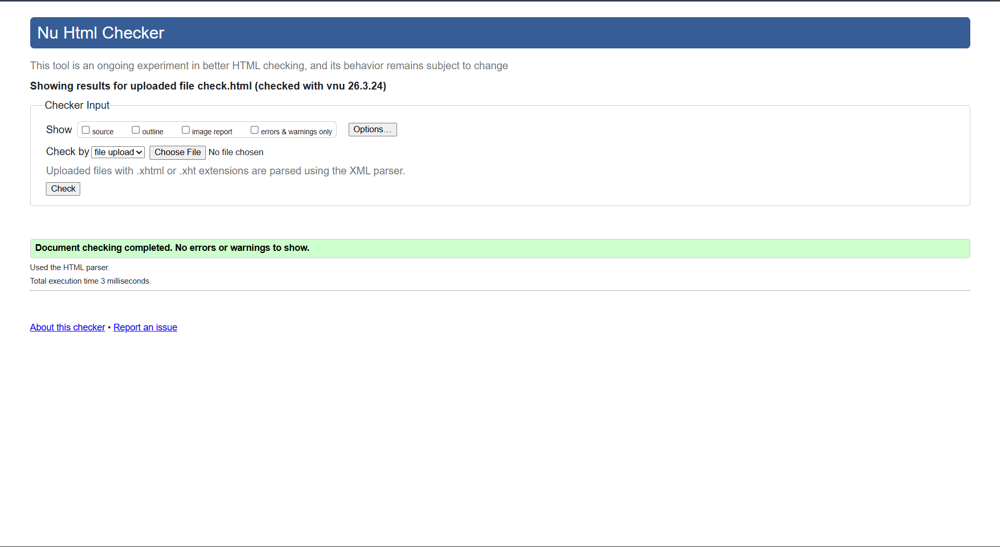
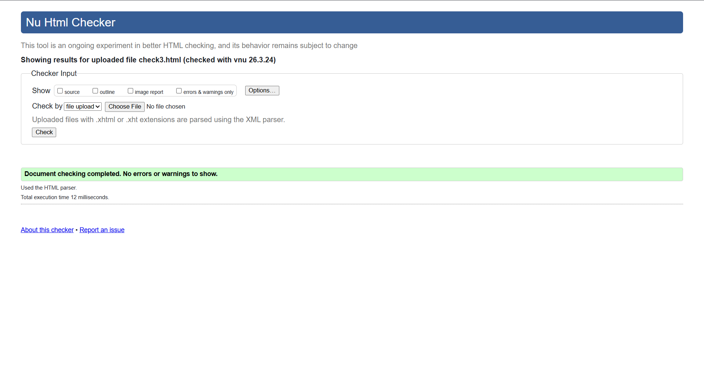

Splash Page validation report
The Splash Page was tested using the W3C HTML Validator to ensure that the HTML structure followed proper web standards. The validation results confirmed that the page does not contain major structural errors and that all HTML elements are correctly nested.
Minor warnings were reviewed and corrected during development. These included ensuring the meta refresh tag and inline scripts were appropriately structured. After making these adjustments, the page successfully passed validation and meets standard HTML requirements.

Back to Page Editor page
AIS Page validation report
The AIS page was validated using the W3C HTML validation tool to ensure the markup and structural logic of the interactive elements were correctly implemented. The validation process confirmed that the HTML structure and semantic tags were properly formatted.
The elements used to create the action cards and progress bar were checked to ensure that all tags were correctly nested and that attributes such as IDs and classes were valid. No significant errors were found, and the AIS page successfully passed validation after minor formatting adjustments.
Back to Page Editor page
Content Page validation report
The Threats to Biodiversity Content page was also tested using the W3C HTML Validator to verify that the page follows correct HTML syntax and structure. The validation confirmed that headings, paragraphs, images, and internal navigation links were correctly used throughout the page.
During validation, minor issues such as missing alternative text for some images and spacing inconsistencies were corrected. After resolving these issues, the page successfully met validation standards and complies with recommended web development practices.
